Journey 04 · Wien Note 6 of 8 Field Note
Vienna: Making Faces
Up until the point I entered the gallery in the back in a small room overlooking the gardens, well after the iconic pieces had been seen, I had been doing what you do in an art museum: moving through rooms, reading labels when they seemed worth reading, thinking the appropriate thoughts about color and composition and historical context, noticing what I liked and what I did not. Experiencing the art, I suppose, in the most textbook sense. I was, if I am honest, mostly inside my own head.
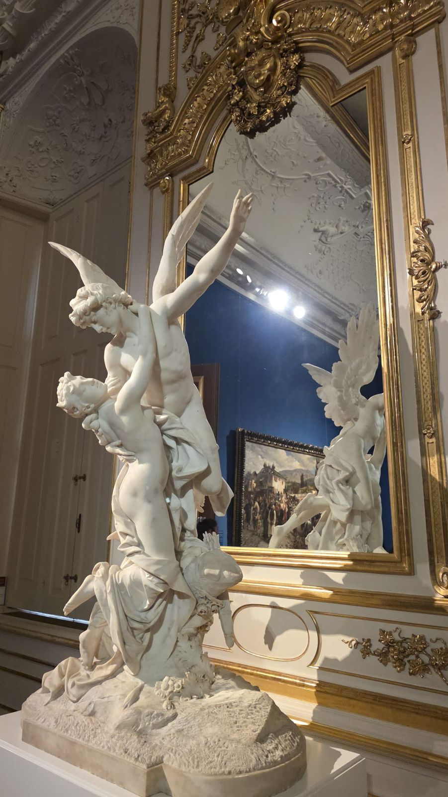
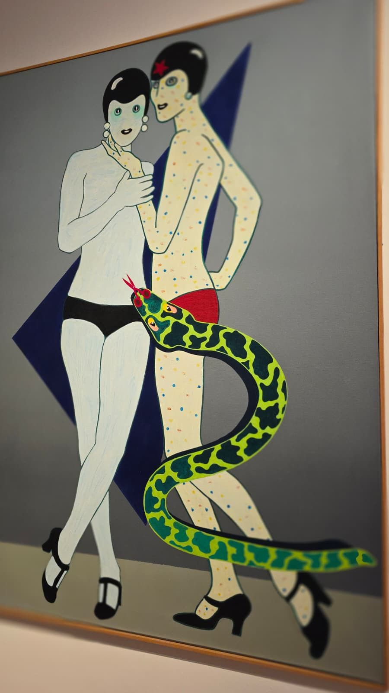
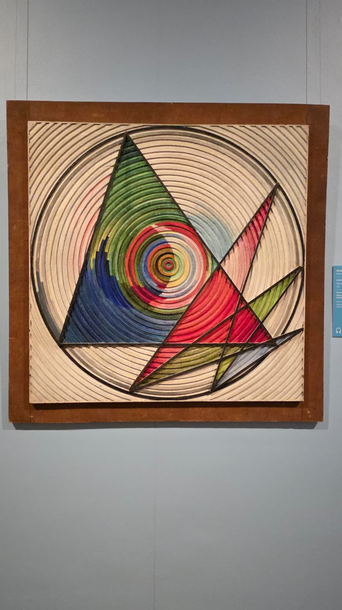


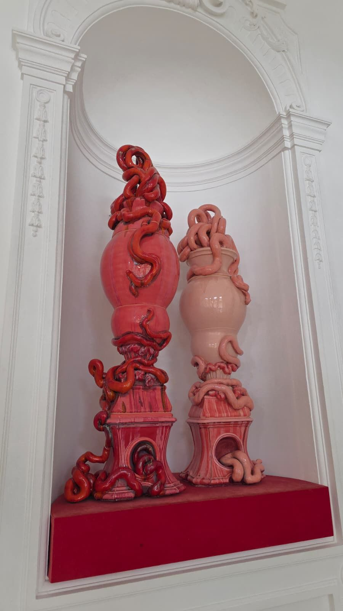
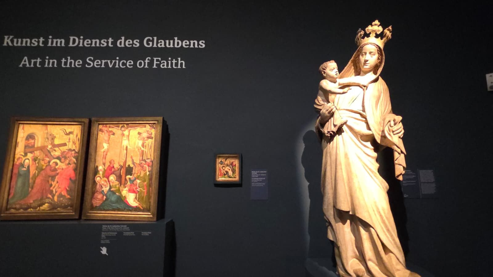
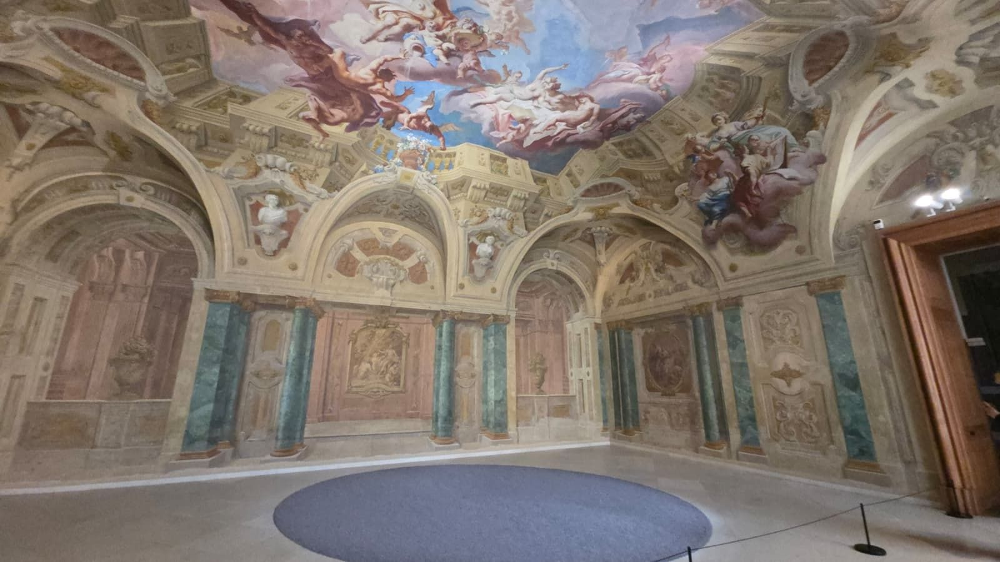
The room with the faces was small and easy to miss, tucked into the back corner of the second floor just before Napoleon’s famous portrait, and slightly dissonant with everything around it. More modern art was kept on the third floor, and this was only the second floor, which was largely pre-1800 periods. I almost walked past it, but I am glad I didn’t.
I walked in and stopped at the first piece. At first, I did not know what I was looking at, and it took a few moments for my brain to recognize that it was bust.
I knew what a bust was supposed to be. Dignified. Classical. A face arranged into the kind of expression that looks good in marble: composed, timeless, slightly above it all.
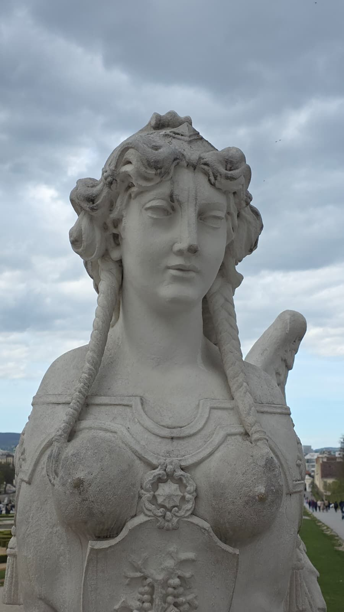
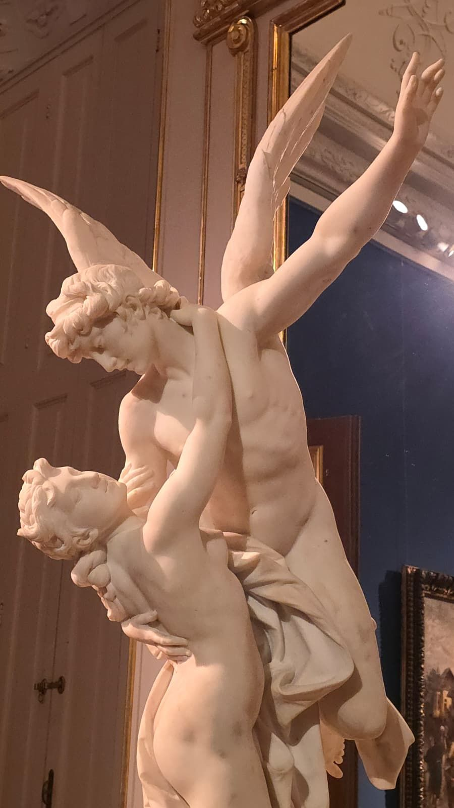
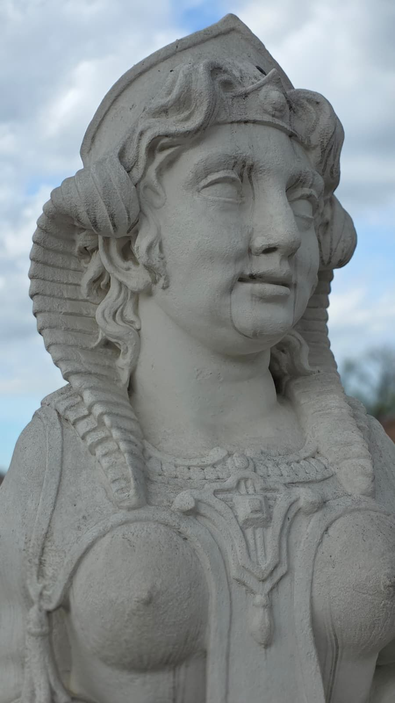
These are statues at the same museum: very classic and traditional to what I expected of busts and sculptures of the pre-1900 period. Usually busts aren’t something that excites me, but these statues share similar characteristics to what I expect of “classic” busts.
These busts…were not that. These faces were doing things faces are not supposed to do, at least not in museums, and definitely not in marble. They grimaced, strained, and contorted into expressions so extreme and so specific that I began mimicking the movement before giving it any thought. My nose scrunched, my mouth twisted and I furrowed my forehead, trying to identify what feeling was being shown through imitation.
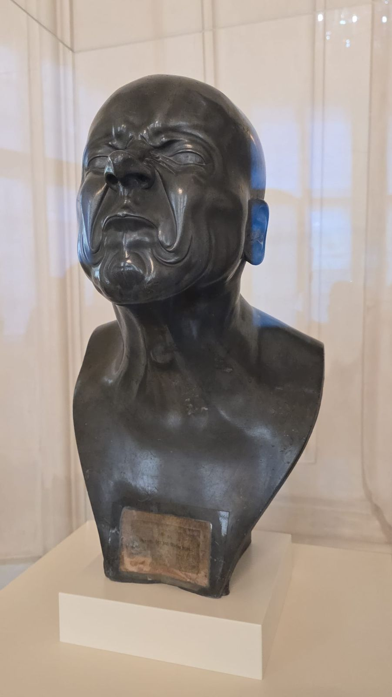
I checked the label. “The Sneeze Inducing Odor”. I tried to arrange my own face into what a sneeze feels like from the inside, that particular suspended moment of pressure and inevitability you can feel high in your nose, and compared it to the sculpture. I smiled, matching my face to the sculpture – not perfectly, but enough that the feeling was certainly there.
The label said 1770-something. I was surprised, as I would be surprised every time I checked a date in that room. This is the late Baroque period for art, and these sculptures felt too contemporary in comparison.
Baroque art was made to inspire grandeur and awe, with artists like Caravaggio and Artemisia Gentileschi, not… this. But the more I looked at the sculptures and smiled as I tried to guess the emotions each were capturing, the more I liked them, and the more I could understand that, despite how unexpected and “modern” they felt, they were exactly the kind of art that the period is known for.
Baroque comes from barocco, a term used for an irregular or imperfect pearl. Not something smooth and ideal, but something shaped by its own formation, something where the natural reality is what makes it feel true, not perfection.
And that is what these busts were doing: They weren’t the classical perfection I was expecting of busts and marble, but they were capturing some very real moments and emotions. They were very human in that way.
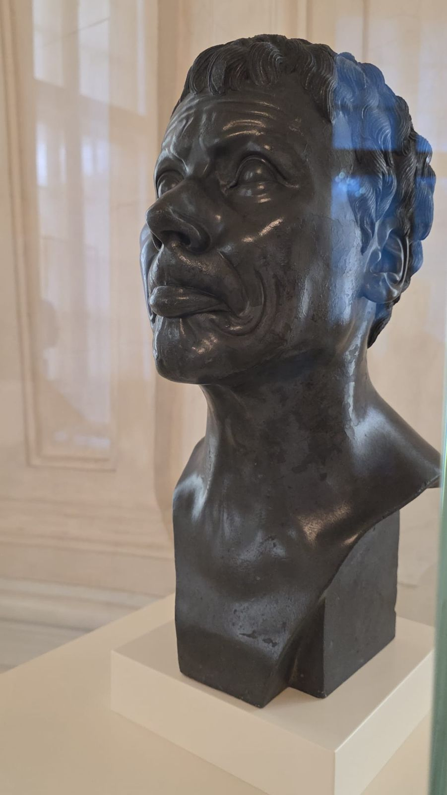
There were not many people in the room at first. Mostly adults, quiet, largely doing what I had been doing everywhere else: observing from a slight remove, keeping their faces still, small murmurings to companions. I was trying to be subtle about my own engagement. I wondered if anyone had noticed the weird lady making her own faces.
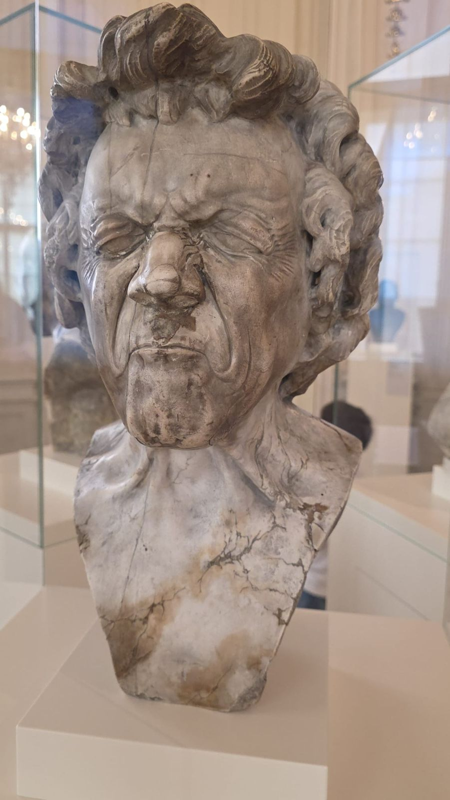
And then the children arrived.
A small group, somewhere between six and ten years old, came into the room and immediately came alive. There was no adjustment period, no moment of confusion, no consulting of labels. They simply saw the faces and understood, instinctively and completely, what was being asked of them. They ran from one to the next, giggling, their own faces contorting in response, delighted by the extremity and the strangeness and the invitation.
They were doing exactly what the sculptures seemed designed to make people do.
Then I watched an older woman admonish her teenage companion (not in English, but the tone needed no translation) for laughing and making his own face back at one of the busts. The teenager settled into stillness, the momentary joy he had expressed now carefully moderated into a more socially acceptable neutral.
It made me think about my own kids. How I would engage them in a room like this? I would encourage them to respond with the art, making the faces with them, matching expressions, turning the sculptures into a game of “what would you title this one?”, because that would be the right way to bring them into contact with the work. The embodied, physical, ridiculous right way.
And then I thought: if I would do that for my kids, why won’t I do it for myself?
I became more expressive after that, just a little. Perhaps, in retrospect, a just little passive aggressively.
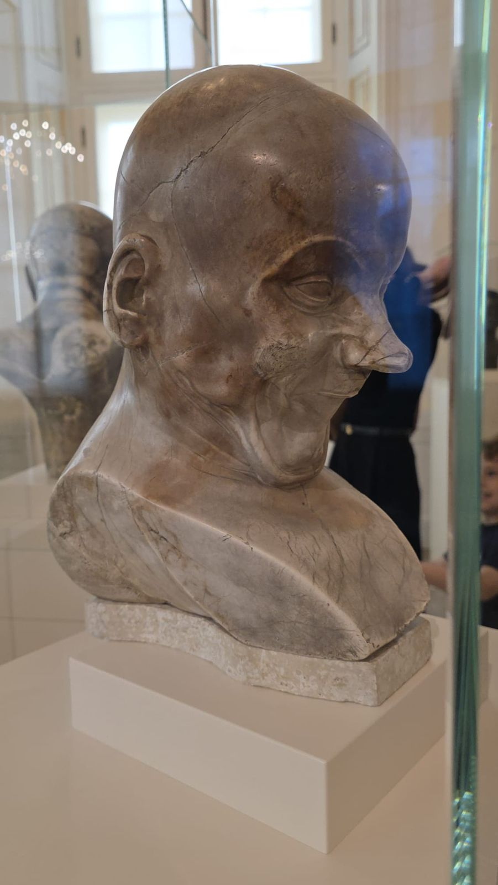
The room was small. I stayed longer than I had originally intended. But when I left, something had shifted in my thinking. I had come into the museum to look at art, but I left that small gallery looking at the people, at how they moved through rooms, what they stopped for, what they allowed themselves to feel, what they seemed to be saying to themselves.
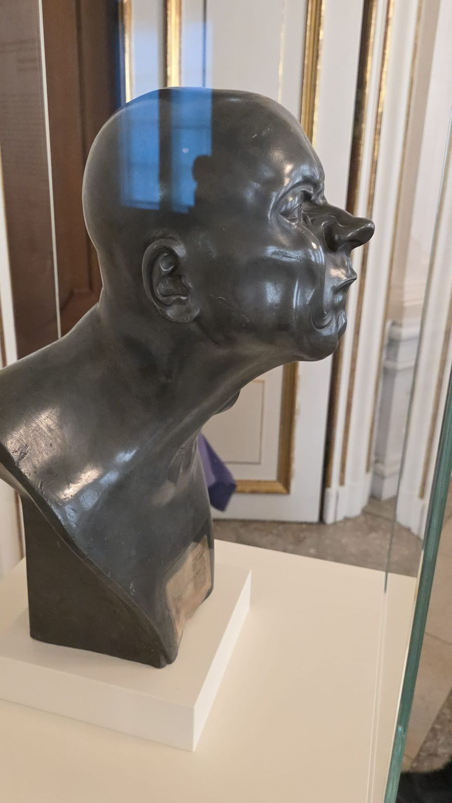
It wasn’t a huge museum. I had time. So, I went back to the beginning and walked through the whole museum again.
Mentioned in
Originally published at fieldnotesfromabroad.com/2026/04/16/vienna-making-faces/